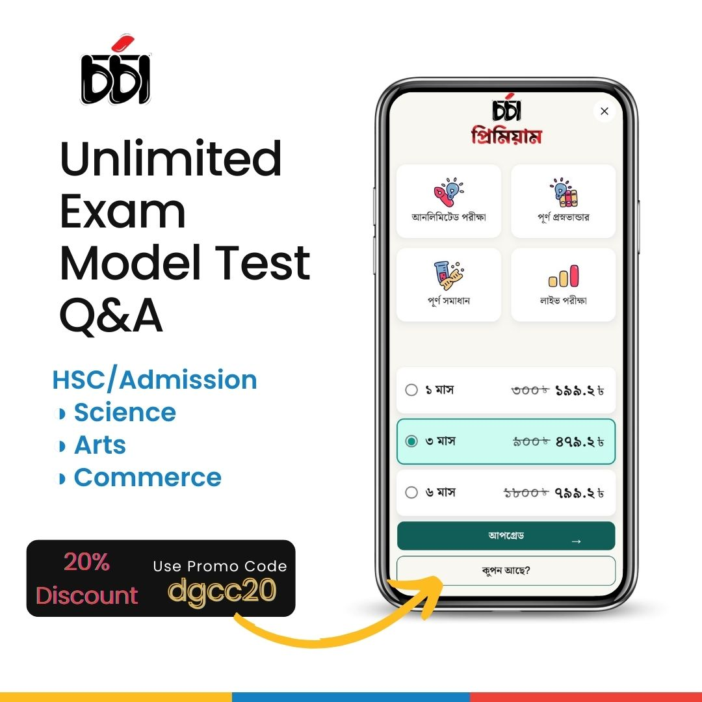

হাজার টাকার গাইড, টেস্টপেপার ও প্রশ্নব্যাংকের বিকল্প এখন CHORCHA APP
HSC এর সকল বোর্ড প্রশ্ন (2015-2023)
MEDICAL, BUET, DU সহ সকল ভার্সিটি প্রশ্নব্যাংক
মূল বই এর অধ্যায়ভিত্তিক অনুশীলনীর প্রশ্ন
IIT, JEE 3 OLYMPIAD লেভেলের প্রশ্ন
অধ্যায় ও টপিকভিত্তিক লক্ষাধিক প্রশ্ন
প্রশ্নের বিস্তারিত ব্যাখ্যা
20% Discount Promo Code : dgcc20

ওয়েব সাইটটির কাঠামো এবং ফিচার সম্পর্কে আপনার কোন মন্তব্য থাকলে তা আমাদের ফিডব্যাকে জানাতে পারেন